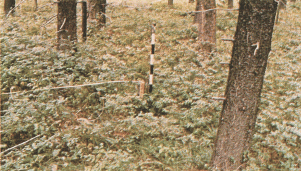
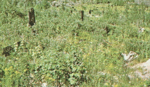

|
Fire Behavior Fuel Model 5 -- Brush |
Anderson (1982) classifies Fire Behavior Fuel Model 5 in the Shrub Fuel Type and describes it as follows:
Fire is generally carried in the surface fuels that are made up of litter cast by the shrubs and the grasses or forbs in the understory. The fires are generally not very intense because surface fuel loads are light, the shrubs are young with little dead material, and the foliage contains little volatile material. Usually shrubs are short and almost totally cover the area. Young, green stands with no dead wood would qualify: laurel, vine maple, alder, or even chaparral, manzanita, or chamise.
Fuel model parameters are available by viewing the Fuel Model Table of Parameters or right-clicking on the fuel model description in the Input Guide window and selecting View parameters.
Anderson's (1982) photographs 13 and 14 on page 8 are examples of fuels fitting this model.
|  | Anderson (1982) Photo 13, Fire Behavior Fuel Model 5. Green, low shrub fields within timber stands or without overstory are typical. Example is Douglas-fir -- snowberry habitat type. |
|  | Anderson (1982) Photo 14, Fire Behavior Fuel Model 5. Regeneration shrublands after fire or other disturbances have a large green fuel component (Sundance Fire, Pack River Area, Idaho, USA). |